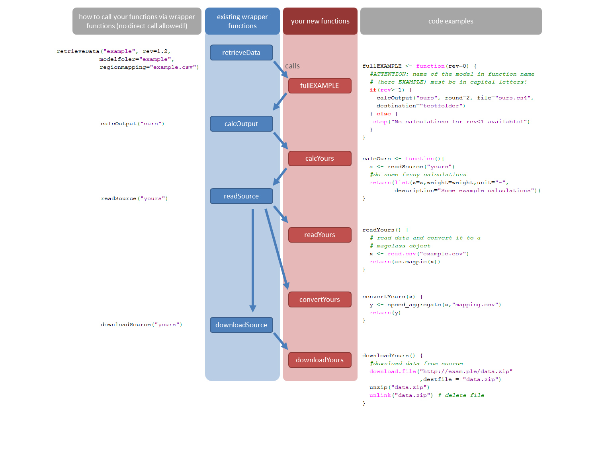

Data preparation with madrat
Jan Philipp Dietrich
2026-03-19
Source:vignettes/madrat.Rmd
madrat.Rmdmadrat is a framework that can help structuring data preparation in R. It splits the data preparation into separate steps with each having distinctive requirements about the returned data. The following tutorial will describe the first steps with the package together with the specific requirements for each calculation step.
Setup
madrat requires a local directory to store data such as downloaded
source data, cache files, and output. Running getConfig in
the package for the first time you will be asked for a folder to use and
store that setting permanently (if allowed by the user).
library(madrat)
cfg <- getConfig()
#> Initialize madrat config with default settings..
#> madrat mainfolder for data storage not set! Do you want to set it now? (y/n)After setting that directory, the package is ready to use. If not
stated otherwise in the config, all downloaded source data and created
output files can be found in the subdirectories sources/ or
output/ of the main directory, respectectively.
If you want to change settings, e.g. the location of the input data archive or the region mapping that should be used for aggregation, you can use the function setConfig().
madrat framework components
madrat splits the process of data preparation into the following components (see figure 1): downloadSource, readSource, calcOutput and retrieveData. Note for developers: The source code of each component comes with a madrat wrapper function (depicted in blue) managing the data preparation process and performing some sanity checks on the calculations. The wrapper functions will run user defined functions (colored red) which are specific to a certain source or calculation and that can not be generalized. The arrows indicate which function calls which function. On the right hand side you find example code for the relevant functions. Please note: Never call your functions directly! Use the wrapper functions only to call your functions (see the examples on the left side below). This ensures that already available data can be read from cache which is much faster, but also that all necessary raw data source files are found.

downloadSource
The first step in data preparation is downloading the source data.
downloadSource will create a folder for the given source
and set all local file paths correctly. The user defined download
function must contain the code required to download the source data in
to the local folder the script is run from. An example for such a
function is madrat:::downloadTau.
madrat:::downloadTau
#> function (subtype = "paper")
#> {
#> settings <- list(paper = list(title = "Tau Factor (cellular, crop-specific)",
#> description = paste("Cellular (0.5deg), crop-specific land use intensity (tau)",
#> "for 1995 and 2000"), url = paste0(c("https://rse.pik-potsdam.de/data/madrat/",
#> "https://zenodo.org/record/4282581/files/"), "tau-paper.zip"),
#> doi = "10.5281/zenodo.4282581"), historical = list(title = "Tau Factor (historic trends)",
#> description = "Historic land use intensity (tau) development",
#> url = paste0(c("https://rse.pik-potsdam.de/data/madrat/",
#> "https://zenodo.org/record/4282548/files/"), "tau-historical.zip"),
#> doi = "10.5281/zenodo.4282548"))
#> meta <- toolSubtypeSelect(subtype, settings)
#> tryCatch({
#> download.file(meta$url[1], destfile = "tau.zip", quiet = requireNamespace("testthat",
#> quietly = TRUE) && testthat::is_testing())
#> meta$url <- meta$url[1]
#> }, error = function(e) {
#> download.file(meta$url[2], destfile = "tau.zip", quiet = requireNamespace("testthat",
#> quietly = TRUE) && testthat::is_testing())
#> })
#> if (length(meta$url) == 2)
#> meta$url <- meta$url[2]
#> unzip("tau.zip")
#> unlink("tau.zip")
#> return(list(url = meta$url, doi = meta$doi, title = meta$title,
#> description = meta$description, author = person("Jan Philipp",
#> "Dietrich", email = "dietrich@pik-potsdam.de", comment = "https://orcid.org/0000-0002-4309-6431"),
#> unit = "1", version = "1.0", release_date = "2012-05-10",
#> license = "Creative Commons Attribution-ShareAlike 4.0 International License (CC BY-SA 4.0)",
#> reference = bibentry("Article", title = paste("Measuring agricultural land-use intensity -",
#> "A global analysis using a model-assisted approach"),
#> author = c(person("Jan Philipp", "Dietrich", email = "dietrich@pik-potsdam.de",
#> comment = "https://orcid.org/0000-0002-4309-6431"),
#> person("Christoph", "Schmitz"), person("Christoph",
#> "Mueller"), person("Marianela", "Fader"), person("Hermann",
#> "Lotze-Campen"), person("Alexander", "Popp")),
#> year = "2012", journal = "Ecological Modelling",
#> volume = "232", pages = "109-118", url = "https://doi.org/10.1016/j.ecolmodel.2012.03.002",
#> doi = "10.1016/j.ecolmodel.2012.03.002")))
#> }
#> <bytecode: 0x55d0ac849ee8>
#> <environment: namespace:madrat>The name of the user function always has to be a combination of the function type (in this case “download”) and the source or calculation type (in this case “Tau”). The wrapper function always expects the source or calculation type as argument. To run downloadTau through the wrapper, one has to use the following call:
downloadSource("Tau", overwrite = TRUE)Here we set overwrite = TRUE to make sure that the data
is downloaded in any case. In the default case
overwrite = FALSE data will only be downloaded if there is
not already an existing source folder containing the data.
readSource
As soon as the data is available in the source folder it can be read
in. Reading is performed by readSource and is split into 1
to 3 steps (depending on the data): read, correct and convert.
read
In the first step the data is read into R and converted to a magclass object. Except of the conversion no other modifications are performed and the content of the magclass object should be completely identical to the downloaded data.
madrat:::readTau
#> function (subtype = "paper")
#> {
#> files <- c(paper = "tau_data_1995-2000.mz", historical = "tau_xref_history_country.mz")
#> file <- toolSubtypeSelect(subtype, files)
#> x <- read.magpie(file)
#> x[x == -999] <- NA
#> return(x)
#> }
#> <bytecode: 0x55d0ace20450>
#> <environment: namespace:madrat>If one wishes to only read in data (without conversion), this can be
done by running readSource with the argument
convert = FALSE:
x <- readSource("Tau", "paper", convert = FALSE)If a data source comes with several files it is sometimes necessary to specify a subtype. In the given example the source data comes with two datasets (“paper” and “historical”). In the example above the subtype “paper” is chosen.
correct
The correction step is optional and can be used to fix issues in the
data such as removing duplicates, replacing NAs or other corrections.
This step is purely about fixing quality problems in the input data. If
this step is required one can create a correct-function such as
correctTau for the data source “Tau”. As the example data
“Tau” does not require any of these corrections there is no correct
function in the given example data.
convert
To allow for flexible aggregation of data to world regions and for
compatibility between different data sources madrat imposes a standard
spatial resolution on all data sources. The used standard is the ISO
3166-1 3-digit country code standard. The function
getISOlist() returns a vector of these countries.
After conversion the dataset should provide numbers for all countries
listed in that standard. The wrapper function readSource
will throw an error if countries are missing. It is important that a
best guess is used for countries which are not directly provided by the
given source as everything else might lead to errors or critical biases
in the follow up calculations. Support tools such as
toolCountryFill help to interpolate the missing
information:
madrat:::convertTau
#> function (x)
#> {
#> "!# @monitor madrat:::sysdata$iso_cell magclass:::ncells"
#> "!# @ignore madrat:::toolAggregate"
#> tau <- x[, , "tau"]
#> xref <- x[, , "xref"]
#> xref[is.na(tau)] <- 10^-10
#> tau[is.na(tau)] <- 1
#> if (ncells(x) == 59199) {
#> isoCell <- sysdata$iso_cell
#> isoCell[, 2] <- getCells(x)
#> tau <- toolAggregate(tau, rel = isoCell, weight = collapseNames(xref))
#> xref <- toolAggregate(xref, rel = isoCell)
#> }
#> tau <- toolCountryFill(tau, fill = 1, TLS = "IDN", HKG = "CHN",
#> SGP = "CHN", BHR = "QAT")
#> xref <- toolCountryFill(xref, fill = 0, verbosity = 2)
#> return(mbind(tau, xref))
#> }
#> <bytecode: 0x55d0a94d9358>
#> <environment: namespace:madrat>Read and convert can be run together by running
readSource:
x <- readSource("Tau", "paper")Same as correct, also the convert function
is optional, but not providing it indicates to madrat that the resulting
data is not on ISO country level and will therefore not be available for
aggregation to world regions. Cases in which sources will not have a
convert function are datasets without spatial resolution (e.g. providing
only a global value) or datasets which should for other reasons not be
aggregated to country level. For most cases a convert
function should exist.
As the corrections performed in a correct function are
usually similar to the interpolations performed in a
convert function it is also possible to have these
corrections just included in the convert functions. For
this reason most sources usually have a read and a
convert but not a correct function.
calcOutput
Besides reading in a data source and preparing it for further usage, data preparation often requires to extract certain information out of the given data sources. In contrast to the steps before this can also mean blending two or more datasets into one output dataset. For this reason madrat distinguishes between the source type, which is always linked to a specific source, and a calculation type, which is always linked to a specific data output.
In the given example the data source “Tau” is used to calculate a data output called “TauTotal”.
madrat:::calcTauTotal
#> function (source = "paper")
#> {
#> tau <- readSource("Tau", source)
#> x <- collapseNames(tau[, , "tau.total"])
#> weight <- collapseNames(tau[, , "xref.total"]) + 10^-10
#> return(list(x = x, weight = weight, min = 0, max = 10, structure.temporal = "^y[0-9]{4}$",
#> structure.spatial = "^[A-Z]{3}$", unit = "1", description = "Agricultural Land Use Intensity Tau",
#> note = c("data based on Dietrich J.P., Schmitz C., Müller C., Fader M., Lotze-Campen H., Popp A.,",
#> "Measuring agricultural land-use intensity - A global analysis using a model-assisted approach",
#> paste("Ecological Modelling, Volume 232, 10 May 2012, Pages 109-118, ISSN 0304-3800,",
#> "https://doi.org/10.1016/j.ecolmodel.2012.03.002.")),
#> source = bibentry("Article", title = paste("Measuring agricultural land-use intensity - A global",
#> "analysis using a model-assisted approach"), author = c(person("Jan Philipp",
#> "Dietrich"), person("Christoph", "Schmitz"), person("Christoph",
#> "Mueller"), person("Marianela", "Fader"), person("Hermann",
#> "Lotze-Campen"), person("Alexander", "Popp")), year = "2012",
#> journal = "Ecological Modelling", volume = "232",
#> pages = "109-118", url = "https://doi.org/10.1016/j.ecolmodel.2012.03.002",
#> doi = "10.1016/j.ecolmodel.2012.03.002")))
#> }
#> <bytecode: 0x55d0a69991e0>
#> <environment: namespace:madrat>calc-Functions always have to return a list of objects with some list
entries mandatory and others optional. Mandatory entries are the
calculated data object in magclass format x, a
weight for aggregating the data from country level to world
regions (can be NULL if the data should just be summed up),
a short description of the dataset, and the
unit of the dataset. Optional statements are for instance a
note with additional details about the data or
min and max values for the data which will be
used for sanity checking the data coming out of the calculation. A full
overview about required and/or allowed list entries can be found in the
help to calcOutput (?calcOutput).
An output calculation can be run with the wrapper function
calcOutput:
x <- calcOutput("TauTotal")By default it will return the data aggregated to the world regions
set in the madrat configuration. Adding the argument
aggregate = FALSE will return the data in its original
resolution and is useful if a calc function is used as source for
another calc function.
retrieveData
When preparing data for a certain purpose it is often the case that
not only one but several datasets have to be prepared as a collection of
data. This is where retrieveData steps in. It allows to
create a collection of datasets and manages their calculation and
packaging. The user defined functions matching to the wrapper
retrieveData start with full in the name:
madrat:::fullEXAMPLE
#> function (rev = 0, dev = "", extra = "Example argument")
#> {
#> "!# @pucArguments extra"
#> writeLines(extra, "test.txt")
#> if (rev >= numeric_version("1")) {
#> calcOutput("TauTotal", years = 1995, round = 2, file = "fm_tau1995.cs4")
#> }
#> if (dev == "test") {
#> message("Here you could execute code for a hypothetical development version called \"test\"")
#> }
#> return(list(tag = "customizable_tag", pucTag = "tag"))
#> }
#> <bytecode: 0x55d0abc58fd0>
#> <environment: namespace:madrat>Each function must have the argument rev which contains
a revision number. This can be used to package the data differently
based on the requested revision of the data. In the given example the
calculation “TauTotal” is only performed for revisions greater or equal
1.
retrieveData("example", rev = 1)retrieveData will perform the calculations, create log
files and package the produced files together with the log files into a
compressed tgz file. The file can be found in the ouput folder of the
main directory specified in the madrat config.
Coding etiquette
To have everything proper functioning there are some coding rules to follow:
- always call download-/read-/calc-functions type explicitly
(e.g.
calcOutput("TauTotal")instead oftype<-"TauTotal";calcOutput(type)). This is necessary so that the network of functions can be properly detected by the madrat framework - Use calcOutput, readSource and downloadSource call only from within other functions of that category or from within a retrieve function. Never use these calls in tool functions!
Use own functions with madrat
Own functions can be made available to madrat just by sourcing them.
They can be made visible to madrat by setting the option
globalenv = TRUE. The following example shows how that can
look like.
library(madrat)
# add global environment to madrat search path
setConfig(globalenv = TRUE)
# define simple calc-function
calcPi <- function() {
out <- toolCountryFill(NULL, fill = pi)
return(list(x = out,
weight = out,
unit = "1",
description = "Just pi"))
}
# run calcPi through wrapper function calcOutput
calcOutput("Pi")In the given example calcPi is a calculation function
which is just assigning the value pi to each country and given each
country the same weight for a weighted aggregation (pi). After sourcing
the function it can be used through the calc-wrapper function
calcOutput("Pi"). The result is the aggregated data to the
default region set up.
The same procedure works also for all other functions such as
downloadXYZ, readXYZ, correctXYZ,
convertXYZ and fullXYZ.
Create madrat-based package
Since version 1.00 madrat allows to link packages to it and make use of its functionality. For linking madrat (in version >= 2.5.1) has to be added as a package dependency.
Depends: madrat(>= 2.5.1)In addition the following lines of code should be added as
madrat.R to the R folder of the package.
.onAttach <- function(libname, pkgname) {
madrat::madratAttach(pkgname)
}
.onDetach <- function(libpath) {
madrat::madratDetach(libpath)
}The .onAttach statement makes sure that the package is
linked to madrat as soon as it is loaded. The replacements of
cat, message, warning and
stopare required to make use of the specific notification
system in madrat, which makes for instance sure that all notes, warnings
and error messages will show up in the written log files.
Besides these modifications no further changes are required and
functions in the new package will be visible to the madrat
wrapper functions.